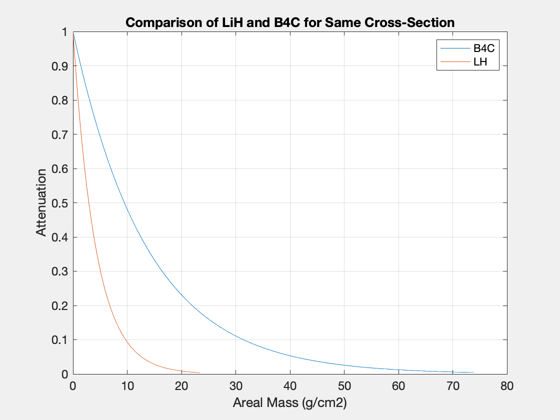

Contents
Neutron analysis
Want to first scatter the neutrons until they are thermalized, then capture them. Compute mean free path and attenuation for both fast and thermalized neutrons for LiH and B4C.
https://www.nndc.bnl.gov/sigma/
%-------------------------------------------------------------------------- % See Also: PowerDHe3 %-------------------------------------------------------------------------- %-------------------------------------------------------------------------- % Copyright 2017 Princeton Satellite Systems, Inc. All rights reserved. %-------------------------------------------------------------------------- % 2015 IAC paper ("Reducing Neutron Emission..."): 5 MW reactor, 3-0.6 kW/m2 % neutrons % Examples: % fD = 1, fT = 1, ion temp = 70 keV, fN = 2% % fD = 1, fT = 0, ion temp = 70 keV, fN = 0.38% % fD = 1, fT = 0, ion temp = 70/140 keV, fN = 0.15% % fD = 0.16, fT = 0, ion temp = 70/140 keV, fN = 0.02% global PSS_NO_INTERACTIVE_DEMOS
Calculate the fusion and neutron power
d = PowerDHe3; ratio = 2; % ratio 3He:D ne = 4.3e20; d.tHe3 = 100; % potentially uo to 140 keV d.tD = 100; % potentially 70 keV d.tE = 30; % electron temp d.fD = 1; % as low as 0.25 d.fT = 0; % calculate ion densities from electron density assuming fuel ratio den = 1 + 2*ratio; densityBC = 1/den*ne; d.nD = densityBC; d.nHe3 = densityBC*ratio; % these are powers in MW per cubic meter [pF, pN, pB, nNd, nNt] = PowerDHe3( d ) % Calculate the volume and area % Wall radius (average shielding radius) radiusWall = 0.5; % this is an elongation of 5 (K = l/2r) rPlasma = 0.3; kappa = 5; lPlasma = 2.5; % 2*rPlasma*kappa; % % This is the volume of the separatrix volume = (2/3)*pi*rPlasma^2*lPlasma; % The wall technically extends past the separatrix plus has end caps, this is % just a simple cylinder wallArea = 2*pi*radiusWall*lPlasma; pFusion = pF*volume; pNeutron = pN*volume; neutronWallLoad = pN/wallArea; fprintf('\nTotal Fusion Power: %3.2f MW\n',pFusion); fprintf('\nFusion Power per length: %3.2f MW/m\n',pFusion/lPlasma); fprintf('%.2f kW Neutron power\n',pNeutron*1e3); fprintf('%.2f%% Neutron power as %% of fusion power\n',pN/pF*100); fprintf('%.2f kW/m2 Neutron wall load\n',neutronWallLoad*1e3); fprintf('%.2g n/s Neutron rate\n',nNd); fprintf('%.2g n/m2/s Neutron flux\n',nNd/wallArea); fprintf('1 year fluence: %g /m2\n',nNd/wallArea*365*86400)
pF =
7.581
pN =
0.034926
pB =
1.1203
nNd =
8.8987e+16
nNt =
0
Total Fusion Power: 3.57 MW
Fusion Power per length: 1.43 MW/m
16.46 kW Neutron power
0.46% Neutron power as % of fusion power
4.45 kW/m2 Neutron wall load
8.9e+16 n/s Neutron rate
1.1e+16 n/m2/s Neutron flux
1 year fluence: 3.57306e+23 /m2
Constants and parameters
Avogadro's number
NA = 6.022e23; % 1/mol thickness30 = linspace(0,30,101); % cm thickness20 = linspace(0,20,101); % cm thickness10 = linspace(0,10,101); thickness1 = linspace(0,1,101);
Neutron attenuation by Enriched B4C
thermal capture B10: 3840 b number density: NA * rho / M, molecules/m3 Nboron = Nb4c * 4 (4 atoms per molecule) http://holbert.faculty.asu.edu/eee460/NumberDensity.pdf B10: M = 10.0129370 B: M = 10.81 (about 80% B11) Note: density of B4C is 2.52 g/cm3 and (10)B4C is 2.465 g/cm3
disp('Enriched B4C') % Microscopic cross-sections - sigma; in barns (10e-24 cm-2) sigmaC_H = 0; % H - no capture sigmaC_B = 760; % Natural boron (10/11) sigmaC_B10 = 3840; % B10 only sigmaS_B = 2; % fast - scatter sigmaS_C = 1.5; % fast - scatter % macro sections are additive - 4B and 1C densityBC = 2.465; % g/cm2 Mb4c = 4*10.01 + 12.01; % atomic weight of boron-carbide, g/mol Nb = NA*densityBC/Mb4c*4; % atoms/cm3 of boron in boron-carbide - 4 atoms/molecule Nc = NA*densityBC/Mb4c; % atoms/cm3 of carbon - 1 atom % fast scattering: 2 barns for B11, 1.5 barns for B10, 1.5 for C % mean free path: cm SigmaFast_BC = sigmaS_B*1e-24*Nb + sigmaS_C*1e-24*Nc lambdaS_BC = 1/SigmaFast_BC % 2/1.5 barns for B4C gives a lambda of 3.7 cm attenFast_BC = exp(-SigmaFast_BC*thickness20); attenFast90_BC = -log(0.1)/SigmaFast_BC Plot2D(thickness20,attenFast_BC,'Thickness (cm)','Intensity (\Phi/\Phi_0)','Fast Neutron Attenuation by B4C') % disp('select location on plot for text...') % gtext('\sigma = 2 barnes') % thermal capture: 3840 barns for B10, essentially 0 for the carbon SigmaC_BC = sigmaC_B*1e-24*Nb + 0*1e-24*Nc; lambdaC_BC = 1/SigmaC_BC SigmaC_B10C = sigmaC_B10*1e-24*Nb + 0*1e-24*Nc; lambdaC_B10C = 1/SigmaC_B10C attenCap_BC = exp(-SigmaC_BC*thickness1); attenCap_B10C = exp(-SigmaC_B10C*thickness1); Plot2D(thickness1,[attenCap_BC;attenCap_B10C],'Thickness (cm)','Intensity (\Phi/\Phi_0)','Thermal Neutron Attenuation by B4C') % disp('select location on plot for text...') % gtext('\sigma = 760 barnes')
Enriched B4C
SigmaFast_BC =
0.27093
lambdaS_BC =
3.691
attenFast90_BC =
8.4988
lambdaC_BC =
0.011534
lambdaC_B10C =
0.0022828
LiH
thermal scattering H: 82 b thermal scattering Li: 1.37 b thermal capture Li: 70.5 b thermal capture Li6: 940 b fast total Li: 1.5 b
disp('LiH') % these cross sections are for THERMAL neutrons sigmaS_H = 82; sigmaC_H = 0; sigmaC_Li = 70.5; % natural Li (6/7) sigmaC_Li6 = 1000; % Li6 % for FAST neutrons sigmaFast_H = 2.8; sigmaFast_Li = 1.9; densityLH = 0.78; % g/cm3 Mlh = 6.94 + 1.008; % atomic weight of LH Nlh = NA*densityLH/Mlh % molecules/cm3, same for both Li and H % Macro cross-sections % fast - scattering: both elements contribute SigmaFast_LH = (sigmaFast_H + sigmaFast_Li)*1e-24*Nlh; attenFast90_LH = -log(0.1)/SigmaFast_LH % capture - Li only SigmaS_LH = sigmaS_H*1e-24*Nlh; SigmaC_LH = sigmaC_Li*1e-24*Nlh; SigmaC_L6H = sigmaC_Li6*1e-24*Nlh; % mean free paths lambdaFast_LH = 1/SigmaFast_LH lambdaS_LH = 1/SigmaS_LH lambdaC_LH = 1/SigmaC_LH lambdaC_L6H = 1/SigmaC_L6H % plots attenFast_LH = exp(-SigmaFast_LH*thickness20); Plot2D(thickness20,attenFast_LH,'Thickness (cm)','Intensity (\Phi/\Phi_0)','Fast Neutron Attenuation by LiH') if ~PSS_NO_INTERACTIVE_DEMOS disp('select location on plot for text...') gtext('\sigma = 2 barns') end scatterH = exp(-sigmaS_H*1e-24*Nlh*thickness10); lambdaH = 1/(sigmaS_H*1e-24*Nlh) Plot2D(thickness10,scatterH,'Thickness (cm)','Intensity (\Phi/\Phi_0)','Thermal Neutron Scattering by H in LiH') captureLi = exp(-sigmaC_Li*1e-24*Nlh*thickness10); Plot2D(thickness10,captureLi,'Thickness (cm)','Intensity (\Phi/\Phi_0)','Thermal Neutron Capture by Li in LiH') captureLi6 = exp(-SigmaC_L6H*thickness10); Plot2D(thickness10,captureLi6,'Thickness (cm)','Intensity (\Phi/\Phi_0)','Thermal Neutron Capture by Li6 in LiH') SigmaLH_t = (sigmaS_H + sigmaC_Li)*1e-24*Nlh; Plot2D(thickness10,exp(-SigmaLH_t*thickness10),'Thickness (cm)','Intensity (\Phi/\Phi_0)','Total Transmission (Thermal) in LiH') Plot2D(thickness10,exp(-SigmaC_L6H*thickness10),'Thickness (cm)','Intensity (\Phi/\Phi_0)','Total Transmission (Fast) in LiH') hold on yy = axis; plot(yy(1:2),0.1*[1 1],'r')
LiH
Nlh =
5.9099e+22
attenFast90_LH =
8.2897
lambdaFast_LH =
3.6002
lambdaS_LH =
0.20635
lambdaC_LH =
0.24001
lambdaC_L6H =
0.016921
lambdaH =
0.20635
Direct comparison - LiH and B4C for fast neutrons
Plot2D(thickness20,[attenFast_BC;attenFast_LH],'Thickness (cm)','Intensity (\Phi/\Phi_0)',... 'Fast Neutron Attenuation (~2.5 MeV)') legend('B4C','LiH')
Mean number of collisions to absorb incoming energy of 2.5 MeV neutron
thermal neutron: 0.025 eV
fprintf('Number of Collisions To Thermalize 2.5 MeV Neutron:\n') % Boron A = 5; zeta = 1 + (A-1)^2/2/A*log((A-1)/(A+1)); n_B = 1/zeta*(log(2.5e6)-log(0.025)) % Lithium A = 3; zeta = 1 + (A-1)^2/2/A*log((A-1)/(A+1)); n_Li = 1/zeta*(log(2.5e6)-log(0.025)) % Hydrogen, zeta = 1 n_H = (log(2.5e6)-log(0.025))
Number of Collisions To Thermalize 2.5 MeV Neutron:
n_B =
52.442
n_Li =
34.245
n_H =
18.421
Attentuation Comparision of B4C to LiH
aBC = densityBC*thickness30; aLH = densityLH*thickness30; NewFig('Comparison') plot(aBC,attenFast_BC); hold on; plot(aLH,attenFast_LH); legend('B4C','LH') grid on xlabel('Areal Mass (g/cm2)') ylabel('Attenuation') title('Comparison of LiH and B4C for Same Cross-Section') if ~PSS_NO_INTERACTIVE_DEMOS gtext('\sigma = 2 barns') end % compare thermalized capture sigmaCaptureB = 3840; sigmaCaptureLi = 1000; SigmaFast_BC = sigmaCaptureB*1e-24*Nb + 0*1e-24*Nc; SigmaLiH = sigmaCaptureLi*1e-24*Nb + 0*1e-24*Nc; lambdaCap = 1/SigmaFast_BC % Mean free path (cm) thickness = linspace(0,10,101); % cm attenCap = exp(-SigmaFast_BC*thickness); Plot2D(thickness,attenCap,'Thickness (cm)','Intensity (\Phi/\Phi_0)','Neutron Attenuation by 2 barns B4C') if ~PSS_NO_INTERACTIVE_DEMOS disp('select location on plot for text...') gtext('\sigma = 3840 barns') end
lambdaCap =
0.0022828
 
Polyethlyene
http://www.shieldwerx.com/assets/swx-213.pdf
Nch2 = 7.9e22; % Todo! %--------------------------------------